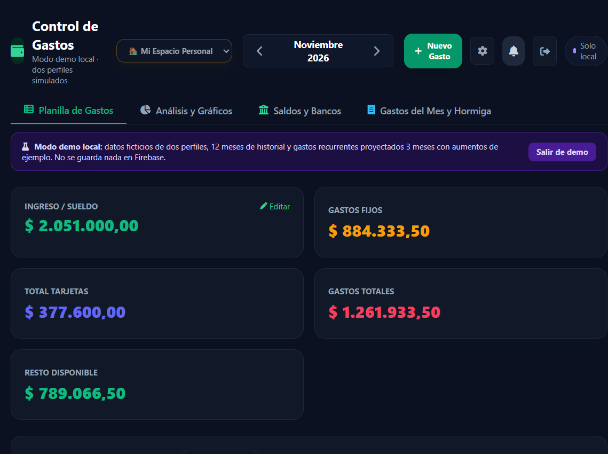

Guía de uso
Control de Gastos
Manual actualizado para organizar gastos personales y compartidos, revisar saldos y consultar estadísticas.
En esta guía
- Planilla mensual y análisis con gráficos.
- Cuentas con varias entidades y saldos independientes.
- Gastos compartidos del grupo y Gasto Hormiga privado.
- Ajustes, invitaciones y modo demo local.
Las capturas de este manual se tomaron con datos ficticios de la demo. No muestran información real.
La disponibilidad de algunas opciones depende de que hayas iniciado sesión y de los permisos de tu cuenta.
